Для дам
Платья миди и макси, струящиеся силуэты, комбинации, мягкая драпировка, прямой или слегка расклешённый крой. Уместны квадратный вырез, тонкие бретели, халтер, открытые плечи, деликатный разрез.
Приглашение на свадьбу
У каждой большой истории есть страница, где героев зовут в путь. В нашей истории это приглашение ваше.
28 июля 2027 года мы станем семьёй. Нам очень хочется, чтобы в этот день рядом были люди, с которыми хорошо и в радости, и в дороге. Вы как раз из их числа.
Приходите разделить с нами этот летний день на берегу.
Роман и Вероника
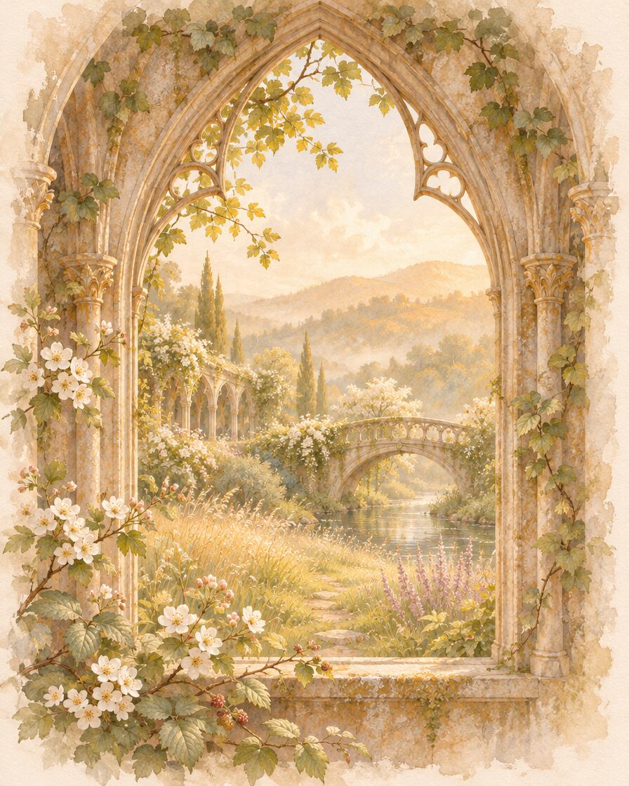
Семья не рождается в одиночку. Её растят люди, которые были рядом все эти годы: учили, поддерживали, шутили и верили в нас.
Поэтому каждый гость на нашей свадьбе участник и помощник. Вместе с нами вы закладываете первый камень нашей семьи.
Нас двое, и мы очень разные. Вероника похожа на воздух: свободная, как орёл в высоком небе. Роман похож на землю: спокойный и мудрый, как дерево с крепкими корнями. Даже фамилии у нас подходящие: Орлова и Корнеев ;)
Небу нужна земля, чтобы было куда возвращаться. Дереву нужно небо, чтобы расти. Из этих двух стихий и складывается наш общий дом.
Запишите в календарь: среда, 28 июля
Добавить в календарь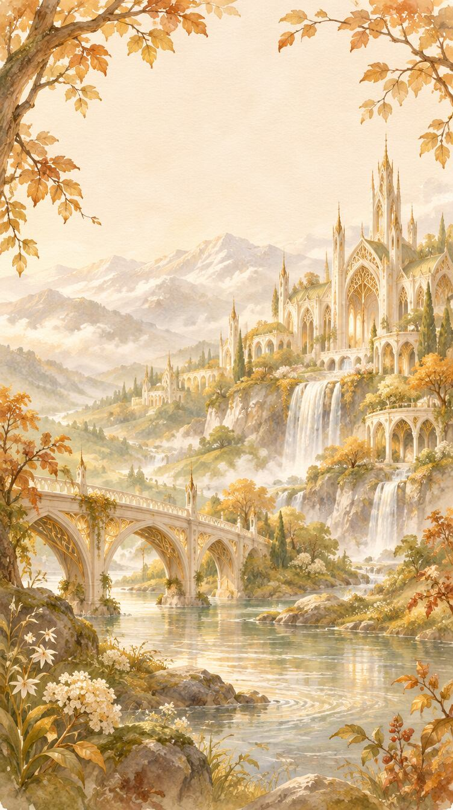
Московская область, г. о. Солнечногорск, деревня Шевлино
Стеклянный павильон среди берёз на самом берегу Истринского водохранилища. Здесь пройдут и церемония, и ужин, и танцы до ночи.
До площадки каждый добирается самостоятельно. Если вы приезжаете из другого города и остаётесь на ночь, все детали о ночлеге мы пришлём вам лично.
Открыть в Яндекс КартахВстречаемся на берегу, обнимаемся, пьём что-нибудь игристое и ловим последние спокойные минуты перед главным.
Тот самый момент. Скажем друг другу главные слова в кругу самых близких.
Ужин, тосты и истории о нас, которые мы, возможно, предпочли бы не слышать ;) А вместо привычного первого танца мы приготовили для вас маленькую историю.
Танцуем, пока не погаснут фонари над водой.
Официальная роспись пройдёт накануне, а 28 июля мы устроим настоящую церемонию для всех вас.
Нам будет очень приятно, если ваш образ поддержит атмосферу дня: благородную, природную и немного сказочную. Мы собрали палитру из того, что живёт в самом месте: песок, берёзовая кора, листва и тёплое дерево.
Платья миди и макси, струящиеся силуэты, комбинации, мягкая драпировка, прямой или слегка расклешённый крой. Уместны квадратный вырез, тонкие бретели, халтер, открытые плечи, деликатный разрез.
Костюмы и комплекты в оттенках бежевого, песочного, оливкового, табачного и коричневого. Подойдут брюки со свободной рубашкой, льняная рубашка, поло или пиджак в расслабленном элегантном стиле.
Ткани: атлас, шёлк, креп, шифон, лён, хлопок, тонкая шерсть. Всё матовое и мягко струящееся.
Пожалуйста, обойдите стороной слишком яркие неоновые оттенки и активные принты.
Часть праздника пройдёт на газоне и деревянном настиле, поэтому советуем устойчивый каблук или изящную плоскую подошву. А вечером у воды бывает свежо: возьмите лёгкую накидку или шаль.
Мы попросили художника нарисовать идеи для разных фигур. Это вдохновение, а не правило: главное, чтобы вам было удобно и красиво.
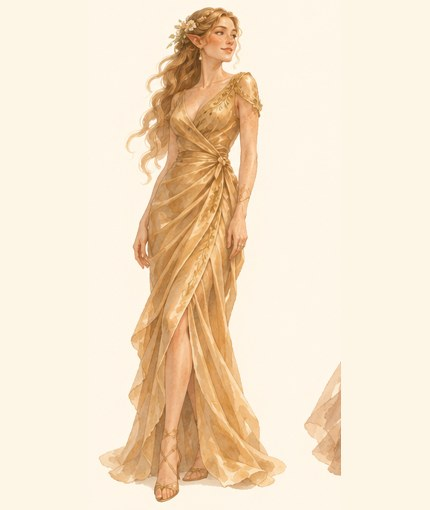
Подчеркните талию: платье с запахом, приталенная комбинация на тонких бретелях, атлас или шёлк.
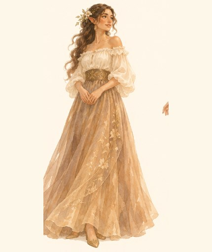
Акцент наверх: открытые плечи или квадратный вырез, юбка А-силуэта или струящаяся макси.
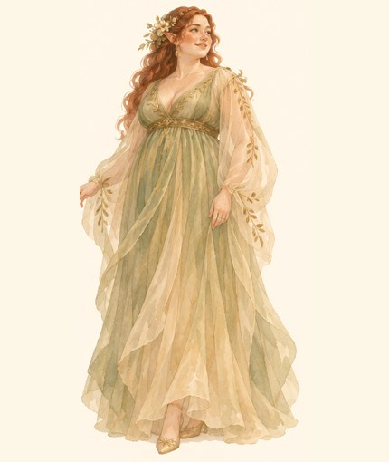
Завышенная талия, V-вырез, мягкая драпировка и лёгкие длинные рукава из шифона.
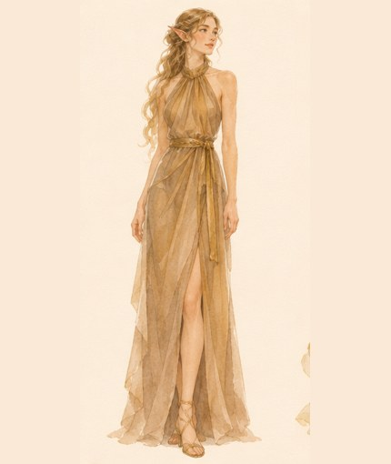
Создайте линию талии: пояс, драпировка, асимметрия, халтер или разрез.
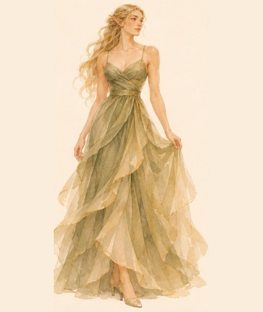
V-вырез или тонкие бретели и объём ниже талии: расклешённая или многослойная юбка.
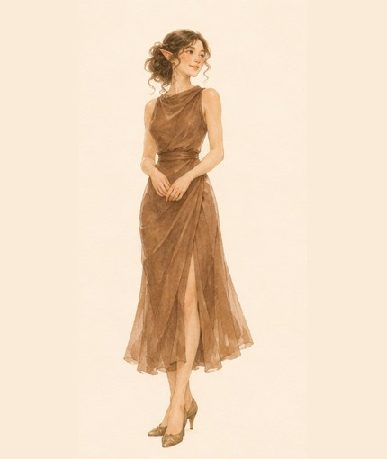
Однотонный образ и вертикальные линии вытягивают силуэт: миди или макси с разрезом.
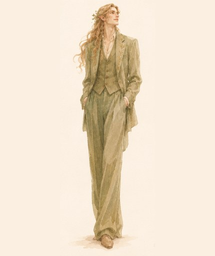
Льняной костюм свободного кроя или многослойность: рубашка, жилет, пиджак.
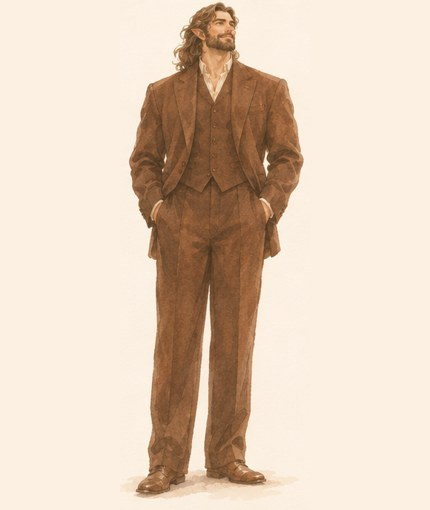
Однотонный костюм глубокого оттенка (мокко, шоколад, олива), прямые брюки, минимум деталей.
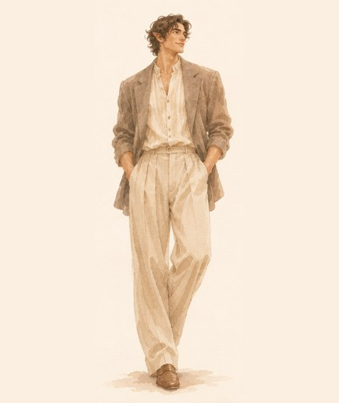
Льняная рубашка или поло с брюками с защипами и расслабленный пиджак.
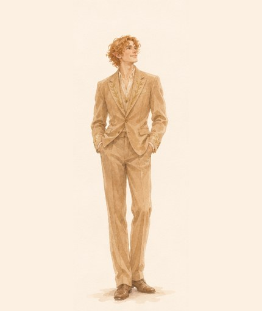
Костюм в один цвет, приталенный пиджак, брюки по длине без заломов.
Мы будем рады любому подарку, сделанному от сердца. А если хотите знать, что нам точно пригодится: самым удобным для нас будет подарок в конверте.
Сразу после свадьбы мы уезжаем в путешествие, и букеты, к сожалению, не дождутся нашего возвращения. Вместо цветов принесите бутылку вина, которое любите сами, и подпишите, на какую годовщину нам её открыть. Так ваш подарок будет с нами ещё много лет.
Нам очень хочется, чтобы каждый из вас стал частью одного трогательного момента. Вместе с ведущим можно подготовить необычное поздравление от всех гостей. Что именно вы придумаете, мы не знаем, и это прекрасно. Подробности расскажет Ирина ;)
По всем вопросам о дне свадьбы, будь то дорога, ночлег или участие в сюрпризе, пишите нашему организатору Ирине. Она знает всё, даже то, чего пока не знаем мы.
Пожалуйста, ответьте нам до 1 июня 2027 года, чтобы мы успели всё подготовить. Если приходите парой, заполните анкету каждый отдельно.
Тестовая анкета. Ответы в таблицу пока не отправляются.
Вы уже ответили. Хотите изменить ответ?